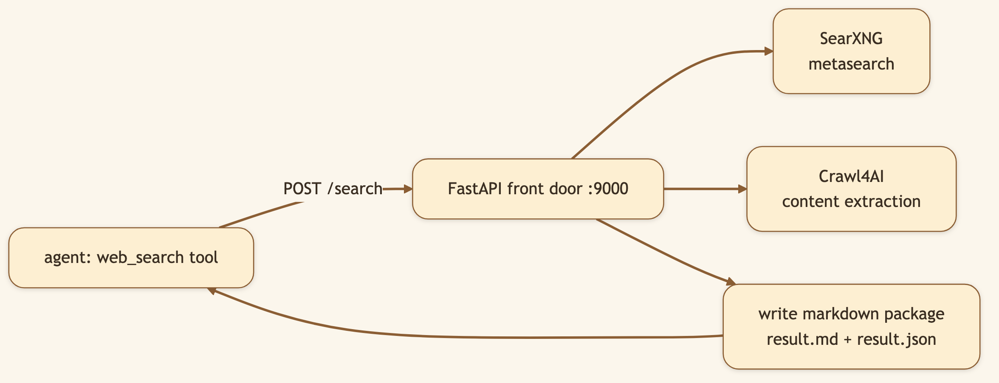
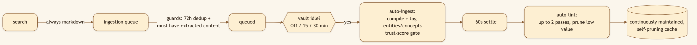
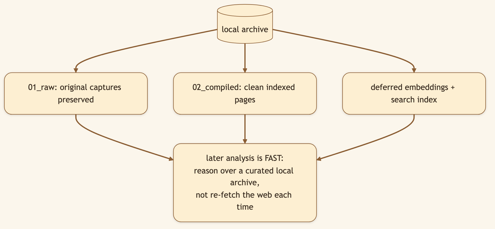

LinkedIn hook (use as the post's first line): "Most agent web search is a black box — query in, answer out, knowledge gone. Ours writes clean markdown to disk every time, then quietly files it into a self-pruning library. Research stops being throwaway." Audience: LinkedIn → Medium. RAG/search engineers, researchers, knowledge-management nerds, privacy-conscious builders.
The throwaway nature of normal agent search is a hidden tax: every session re-discovers the same things. CapyHome treats each search as a small, permanent contribution to a growing library — and the unglamorous plumbing that makes that possible is one decision: every search writes markdown.
🖼️ [User add: image containing — a file tree showing timestamped websearch packages (result.md + result.json) on disk, next to a rendered result.md. Capture from the workspace files after a search.]
CapyHome's web search combines three open-source pieces behind one FastAPI door (port 9000, speaks JSON and MCP):
Run it all locally (make local-stack-start) and your queries never touch a commercial search API.

When the agent searches, the service doesn't just return snippets — CapyHome forces write_markdown_package = True, so a markdown package is always written, alongside raw JSON, in a timestamped directory. One search yields three things: structured data for the agent, a human-readable file, and an artifact already in the format the next step wants.
Why markdown specifically? Because it's the lingua franca of CapyHome's pipeline — the vault ingests markdown, the agent reasons in markdown, reports are written in markdown. No lossy conversion between "found it" and "filed it."
Follow one search all the way through and you can see a small machine running:

Both the idle auto-ingest and the auto-lint are yours to control — set the timer or switch them off entirely. Convenient by default, never running behind your back without an off switch.

🖼️ [User add: image containing — the vault idle auto-run clock control in the top banner (Off / 15 / 30 min selector). Capture from the running app's vault view.]
backend/src/community/web_search/tools.py sets write_markdown_package: True in the payload, so from CapyHome's side it's never optional. The standalone websearch service (/Users/.../websearch) treats it as a flag for other callers.search_results_queue_enabled is on, and there's readable extracted content; a 72h content-hash dedup window prevents pile-ups.frontend/.../vault/use-idle-auto-run.ts): a 15-second poll fires onAutoIngest() once you've been idle past your configured threshold, then onAutoLint() after a settle period. (The 15-minute value inside the backend is something different — a worker lease timeout for rescuing crashed ingest jobs, not the trigger.)Title card: "Every search my AI runs builds a library."
[0:00–0:10] Hook: "Most AI web search throws the knowledge away the second you get your answer. Watch what happens here instead."
[0:10–0:25] Screen — run a search: "I ask it to research something. Normal answer. But look in the files — it wrote a clean markdown package of every result. On disk. Forever, if I want."
[0:25–0:50] Screen — show the vault filling, idle clock: "And it doesn't stop there. When I step away, it quietly ingests those results into a knowledge vault — then prunes the junk. This clock controls when. I can set it to 15 minutes, 30, or off."
[0:50–1:05] Screen — search the vault: "Now next week's research starts from what I already found, not from zero."
[1:05–1:15] Close: "Throwaway search is a tax. This is a library that fills itself. Open source, link below."
Ask CapyHome to research something, then open the workspace files — the markdown packages are sitting there. Leave it idle and watch them flow into the vault.
Next: The Autoresearch Loop → — what happens when research drives itself.